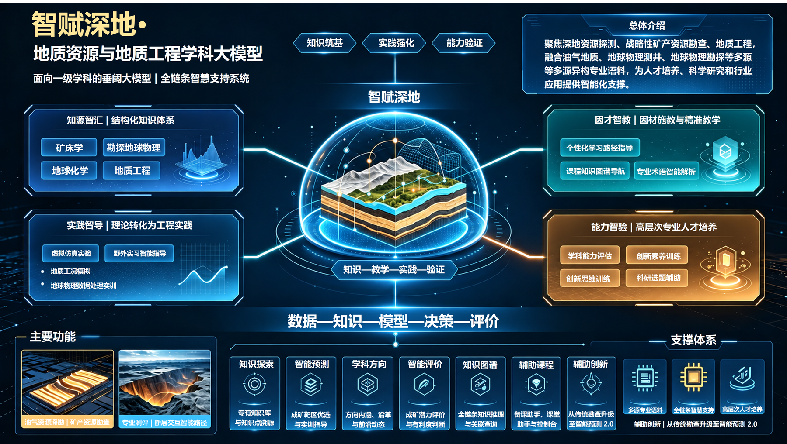

智赋深地·地质资源与地质工程学科大模型
工学 地质资源与地质工程
大模型简介：
总体介绍
“智赋深地”地质资源与地质工程学科大模型是面向地质资源与地质工程一级学科打造的垂域大模型。该模型聚焦深地资源探测、战略性矿产勘查、地质灾害智能防控等学科核心方向，融合油气地质、地球物理测井、地球物理勘探等多源异构专业语料，构建覆盖“知识—教学—实践—验证”全链条的智慧支持体系，为地质资源与地质工程学科的人才培养、科学研究和行业应用提供智能化支撑。
内容框架
（1）知源智汇：主要面向本科生与研究生，依托地质资源与地质工程专业课程群，构建涵盖矿床学、勘查地球物理、地球化学、地质工程等核心知识模块的结构化知识体系，夯实学生的学科专业基础。
（2）因材智教：主要面向本科生和研究生，建立个性化学习路径推荐、课程知识图谱导航、专业术语智能解析等教学辅助模块，实现因材施教与精准教学，提升学生的专业认知效率与深度学习能力。
（3）实践智导：主要面向本科生和研究生，建设虚拟仿真实验、野外实习智能指导、钻探工况模拟、地球物理数据处理实训等体系化实践能力培养模块，强化学生将理论转化为工程实践的能力。
（4）能力智验：主要面向高年级本科生和研究生，涵盖学科能力评估、专业素养测评、创新思维训练、科研选题辅助等模块，重点培养具备深地探测视野与矿产资源评价能力的高层次专业人才。

主要功能
（1）知识探索：构建地质资源与地质工程专有知识库，融合地质调查报告、学术文献、技术标准等多源语料，对学科专业问题进行准确回答，并提供知识点溯源切片，如规范条文、教材章节、典型矿床案例等。
（2）虚仿仿真：建设岩石沉积学、油气地震勘探、放射性测井等虚拟仿真实验，对学生实验与实训环节进行个性化指导，帮助学生熟悉仪器操作流程与数据处理方法，实现理论与实践深度融合。
（3）智能预测：自研成矿靶区智能优选、钻前地质风险预测等模块，融合地质、物探、化探等多源数据进行智能推理，为矿产资源勘查与深地探测提供辅助决策支持，助力新一轮找矿突破战略行动。
（4）学科方向：凝练地质资源与地质工程主要学科方向，学生点击感兴趣的学科方向，获得方向内涵、沿革、发展趋势等，并可根据该方向导师图谱，进一步跟踪国内外前沿研究动态。
（5）智能评价：基于典型矿床模型与勘查数据，学生可自主输入地质特征参数，例如地层组合、构造样式、蚀变分带等，构建目标区的成矿潜力评价模型，判断成矿有利度，锻炼学生的定量评价与创新思维能力。
（6）知识图谱：利用学科知识图谱，引导学生开展问题导向式自主学习，支持从“区域背景—成矿过程—勘查响应—靶区预测”的全链条知识推理与关联查询。
（7）辅助课程：构建核心课程知识库以及AI备课助手、课堂助手、控制台等AI工具和指令，提升教师授课效果、效率和效益。
（8）辅助创新：为学生提供从传统经验找矿向数据驱动与知识引导相结合智能找矿的训练路径，实现由传统勘查升级为智能预测1.0，直至智能预测2.0。